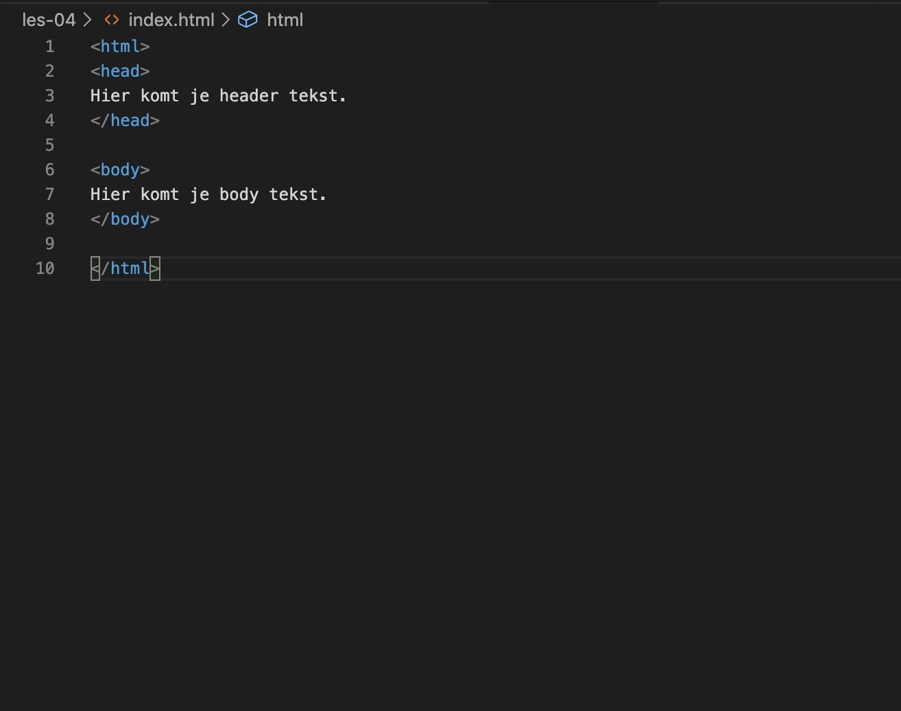
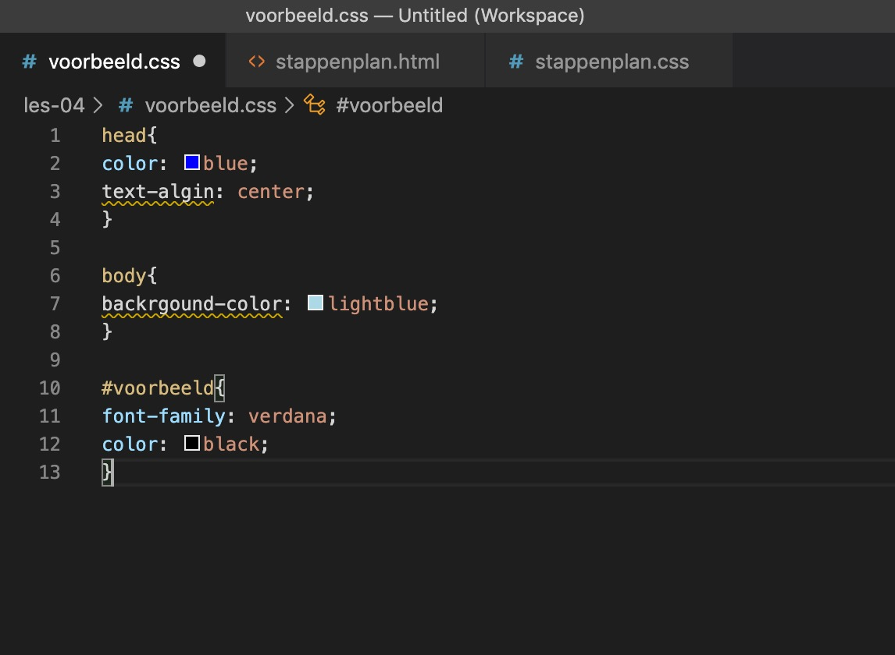
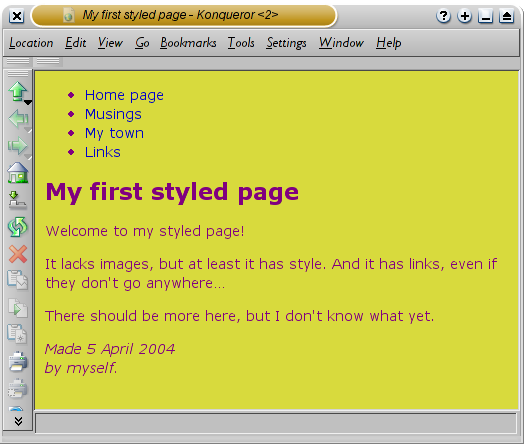

Stappenplan HTML/CSS
Map maken
HTML bestand aanmaken
Bv. "index.html"
CSS bestand aanmaken
Bv. "style.css"
Basiscode invoeren:
<html>
<head>
</head>
<body>
</body>
</html>

Identificeer de delen van de HTML pagina.
Hierdoor kan je naar deze delen verwijzen in CSS om ze op te maken.
Voor id's verwijs je met: #id
Voor classes verwijs je met: .class
Je CSS code zet je tussen deze haakjes: {}
(body en head kan gewoon zonder code voor de haakjes worden gezet)

Voorbeeld van hoe een site eruit
kan zien na css vormgeving:

Voorbeeld van hoe een site eruit ziet
na basis html code: